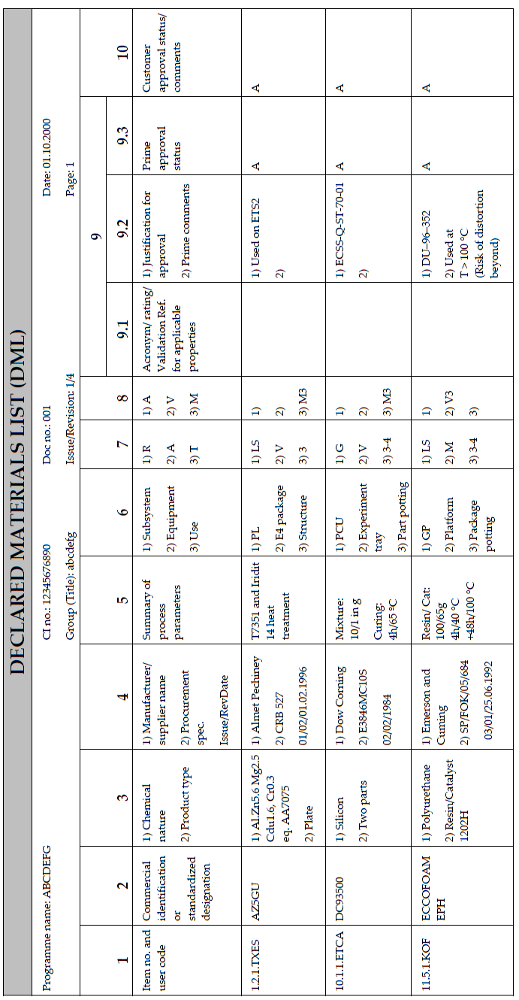

DRD-07.02- Declared Materials List (DML) |
| Reference: |
ECSS-Q-ST-70C |
Space product assurance - Materials, mechanical parts and processes |
| ECSS-Q-ST-70-02C |
Space product assurance - Thermal vacuum outgassing test for the screening of space materials |
| ECSS-Q-ST-70-04C |
Space product assurance - Thermal testing for the evaluation of space materials, processes, mechanical
parts and assemblies
|
| ECSS-Q-ST-70-06C |
Space product assurance - Particle and UV radiation testing of space materials |
| ECSS-Q-ST-70-21C |
Space product assurance - Flammability testing for the screening of space materials |
| ECSS-Q-ST-70-29C |
Space product assurance - The Determination of offgassing products from materials and assembled articles
to be used in a manned space vehicle crew compartment
|
| ECSS-Q-ST-70-36C |
Space product assurance - Material selection for controlling stress-corrosion cracking |
| ECSS-Q-ST-70-37C |
Space product assurance - Determination of susceptibility of metals to stress-corrosion cracking |
| ECSS-Q-ST-70-71C |
Space product assurance - Data for selection of space materials and processes |
| Purpose: |
To provide a common and complete list of all materials the product is made of (incl. mechanical parts).
No separate mechanical parts list (DMPL) is required. The DML shall be consolidated by the contract
holder on the basis of data obtained from his sub suppliers and shall reflect the current design at the
time of issue. The data in the DML make possible to assess whether the materials are suitable for a
specific application.
|
| Content: |
DML shall be broken down into clear categories to facilitate locating each item in the documentation.
The DML shall include the following:
- item number (as the reference of the material in the DML),
- material designation (commercial identification),
- material keys, (e.g. copper, aluminium,)
- chemical nature and type of product,
- manufacturer(s) procurement specifications or standards,
- summary of processing parameters (finish, temper conditions, etc.),
- use and location,
- environmental code,
- size code,
- test data (outgassing, stress, etc.),
- approved status (with reference to the approved authority, to the test report and similar
previous application),
- identification of limited life materials.
Use of codes: any coding or acronyms used within the list shall be definedwithin the DML.
|

Contents of the DML
GROUPS:
Materials are classified into 20 groups depending on their type or their main use:
- Aluminium and aluminium alloys
- Copper and copper alloys
- Nickel and nickel alloys
- Titanium and titanium alloys
- Steels
- Stainless steels
- Filler metals: welding, brazing, soldering
- Miscellaneous metallic materials
- Optical materials
- Adhesives, coatings, varnishes
- Adhesive tapes
- Paints and inks
- Lubricants
- Potting compounds, sealants, foams
- Reinforced plastics (incl. PCBs)
- Rubbers and elastomers
- Thermoplastics (e.g. non-adhesive tapes and foils [MLI])
- Thermoset plastics (incl. PCBs)
- Materials aspects of wires and cables
- Miscellaneous non-metallic materials, e.g. ceramics.
If new groups are created, for a given project, these shall have numbers over 20.
Primers are classified in the group of their associated components.
The materials list consists of 10 columns which shall be completed as indicated below. Furthermore, similar
materials shall be grouped together as specified above. If a particular item does not apply, write N.A. (Not
Applicable).
COLUMN 1: Item number
This consists of the material group identifier and the user code. The user shall be identified by an agreed user
code for the project. One only per material type. It does not change during the life of the
COLUMN 2: Commercial identification or standardized designation
Trade name and number e.g. "ARALDITE AV 100". Correct and standard designation. DLR has chosen:
- Trade name + number. For example, "ARALDITE AY 105"
- If no trade name exists, then the manufacturer's name plus number shall be entered; e.g. "SCHOTT
K7"
- For metal alloys, the AA system is recommended for aluminium alloys, and the AISI system for steel. For
other metals or alloys, the main constituent is entered first except in the case of a traditional name (e.g.
brass or bronze).
For each material as designated above, a unique item number shall be given. If several lines are used for different
applications or processing, sub-item numbers shall be added.
COLUMN 3: Chemical nature and product type
Example: epoxy resin, polyurethane adhesive, Ti6AI4V.
COLUMN 4: Procurement information
Manufacturer or supplier: name of the manufacturer and name of the supplier if different.
Procurement specification: reference of the procurement specification with issue, revision and date. It may be
replaced by a national or international specification or standard, if this exists, and identifies the source of
procurement, if relevant.
COLUMN 5: Processing parameters
A summary of the process parameters applied by the user of the process shall be listed, e.g. mixture proportions,
cure temperature, special cleaning agent, surface treatment, thermal treatment and temperature, and reference to
specification number.
COLUMN 6: Use and location
The codes entered shall define the location of the material with respect to the:
- subsystems,
- particular piece of equipment (box or item),
- use of the equipment, e.g. structural element, thermal control, electrical insulation.
COLUMN 7: Environmental code
The environmental code is defined using the table.
| Radiation/UV/ATOX (1) (R) |
Ambiance (A) |
Temperature (2)(3) (T) |
| G: Geostationary |
S: outside shadow |
V: Vacuum |
1: 0 to 100 K |
| L: Low orbit |
L: outside light |
H: Hermetic |
2: 101 to 200 K |
| B: Radiation belts |
|
M: Manned |
3: 201 to 300 K |
| I: Interplanetary |
|
E: Elevated pressure |
........... |
| P: Planetary |
|
|
|
|
|
|
|
- For all materials, a letter is selected from the left-hand column. For materials on the surface
of the spacecraft, the letter "L" or "S" is added.
- Thermal cycling to be indicated by two values, e.g. 3/5.
- "RT" (room temperature) can be accepted as a code between 283 K (10° C) and 313 K (40° C).
Materials that are at a boundary between environments shall be described by two sets of codes.
|
COLUMN 8: Size code
| Size Code |
Value |
| 0 |
0<A or V or M <= 1 |
| 1 |
1<A or V or M <= 10 |
| 2 |
10<A or V or M < 100 |
| 3 |
100<A or V or M < 1000 |
|
|
| 4 |
.... |
where
- A is the area, in cm2
- V is the volume, in cm3
- M is the mass, in g
The size code is indicated by an alphanumeric combination, such as A5, V2 or M3.
|
COLUMN 9: Validation references, justification for approval and prime comments and prime approval
References shall be made to relevant test data that demonstrates the acceptability of the material under the
environmental conditions and the application relevant to the particular project concerned. Specifically corrosion
(CORR), stress corrosion (SCC), flammability (FLAM), offgassing (OFFG) and outgassing (OUTG) data or
report-references are entered.
Standard abbreviations shall be used to summarize the acceptance status of a material for a particular property.
The justification for approval and prime approval columns shall be used for any additional information to obtain
customer approval.
Standard abbreviations are used to summarize the acceptability or otherwise of a material for a specific property.
These are defined for the project.
The supplier approval status code shall be selected from the Table.
| Code |
Description |
| A: |
Approved - All materials classified "A" may be used without restriction. |
| X: |
Approved with a RFA. These materials shall be subjected to an evaluation or validation programme. The
RFA number shall be entered as a comment.
|
| W: |
Approved with a concession. These materials do not meet the requirements but are used for functional
reasons. The concession number shall be entered as a comment.
|
| P: |
Pending a decision. Materials for which an evaluation report or a concession is waiting the supplier's
provisional or definitive approval.
|
| O: |
Open. New materials or materials for which investigations and validations are in progress. |
| R: |
Rejected. |
| D: |
Deleted. This classification is used for a material which is no longer used. |
| If approval cannot be given and one of the other codes are entered, comments shall be
entered in the
appropriate column.
|
COLUMN 10: Customer approval status code and comments
This code shall be selected from Table. Additional comments shall be included where appropriate.